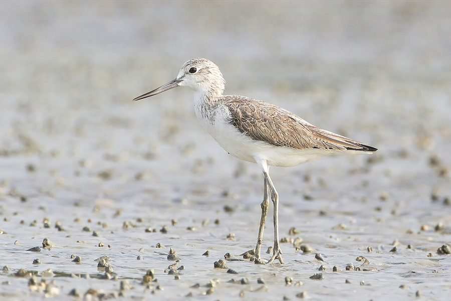

कॉमन ग्रीनशैंकCommon Greenshank
Tringa nebularia · Scolopacidae · BRD-0123

- Scientific name वैज्ञानिक नाम
- Tringa nebularia (Gunnerus, 1767)
- Family कुल
- Scolopacidae
- Hindi हिंदी
- कॉमन ग्रीनशैंक
- Local names स्थानीय नाम
- greenshank, green shank, common greenshank, greenshenk
- Status here यहाँ की स्थिति
- native
- Movement आवागमन
- Winter visitor
- IUCN IUCN
- LC
- Review समीक्षा
- audited and independently read
When to look कब देखें
Winter visitor शीतकालीन प्रवासी. Expected mainly in August, September, October, November, December, January, February, March, April, May. मुख्यतः अगस्त, सितंबर, अक्टूबर, नवंबर, दिसंबर, जनवरी, फ़रवरी, मार्च, अप्रैल, मई में अपेक्षित।
Arrives in August–September from breeding grounds in Siberia and Scandinavia; departs by April–May. Expected along river systems and deep wetlands. All migrants and visitors →
Uses and possibilities उपयोग और संभावनाएँ
Guide: Where the winter birds are: Bakhira, Parvati Arga and the Ayodhya jheels
Drawn from the documented uses in the profile below, where each is labelled traditional, current or a research lead. All uses →
Tell it apart from इनसे अलग पहचानें
कॉमन ग्रीनशैंक / Common Greenshank
Tringa nebularia (Gunnerus, 1767) — Scolopacidae
कॉमन ग्रीनशैंक — यह बड़ी वाडर चिड़िया है जो साइबेरिया से सर्दियों में भारत आती है। इसके पैर हल्के हरे रंग के होते हैं — जिससे इसका नाम "ग्रीनशैंक" मिलता है। यह Common Redshank से बड़ी और पीला रंग लिए होती है। ये नदियों और गहरे तालाबों में रहती हैं और अपनी लंबी चोंच से पानी में छोटी मछलियों और कीड़ों का शिकार करती हैं।
Quick Identification त्वरित पहचान
| Feature | Description | |
|---|---|---|
| Size | Large wader; 30–33 cm long; larger than [[common_redshank\ | Common Redshank]] |
| Legs | Greenish-grey or pale yellow-green; long and slender | |
| Bill | Slightly uptilted; greenish-grey with dark tip; longer than Redshank's | |
| Plumage | Pale grey-brown upperparts; whitish underparts; pale coloration | |
| Wing pattern | White rump and trailing edge (like Redshank) but plumage overall paler | |
| Behaviour | Jerky movements; often solitary or in pairs; wades in deeper water | |
| Call | Loud, sharp teu-teu-teu similar to Redshank but harsher |
Field tip: A large pale wader with greenish legs, spotted on river systems and deeper wetlands during winter — is a Common Greenshank. Larger and paler than Common Redshank, with slightly upturned bill and greenish legs (not red). Often solitary or in pairs rather than flocks.
हिंदी — कैसे पहचानें:
बड़ी वाडर; Redshank से बड़ी।
पैर हरे-भूरे रंग के।
चोंच हल्की सी ऊपर की ओर।
गहरे तालाब में अकेले दिखते हैं।
Morphology आकारिकी
Biometrics:
| Measurement | Range |
|---|---|
| Total length | 300–330 mm |
| Wing (flattened chord) | 167–185 mm |
| Tail | 75–90 mm |
| Bill | 48–58 mm |
| Tarsus | 42–50 mm |
| Weight | 140–200 g |
Size: 30–33 cm long; wingspan 55–66 cm. Weight 140–200 g. A large wader, noticeably larger than Common Redshank.
Plumage: Paler and more uniform than Redshank. Upperparts pale grey-brown with fine streaking. Head and neck pale grey. Underparts white with buffier wash. Breeding birds show darker streaking on head and neck; winter birds greyer. Rump and uppertail coverts white.
Legs and feet: Pale greenish-grey or olive-yellow; long and slender. Distinctly less colourful than Redshank's bright red.
Bill: Slightly upturned (diagnostic); greenish-grey with dark tip. Longer and more robust than Redshank's bill.
Wings: Upper wing coverts grey; flight feathers darker. White trailing edge visible in flight.
Sexes: Females slightly larger; little sexual dimorphism.
Vocalisations. Three main call types:
- Flight call: A loud, sharp teu-teu-teu, harsher and more strident than Redshank.
- Alarm call: Sharp, explosive chu-wit given when flushed.
- Contact calls: Soft whistles between birds.
हिंदी: तेज़ और कर्कश आवाज़। "टेऊ-टेऊ" की कड़क भरी कूकना।
Behaviour & Ecology व्यवहार और पारिस्थितिकी
Wading and foraging: Common Greenshanks are specialist waders, probing in soft mud but also hunting small fish by wading in deeper water than Redshanks. They walk methodically through water up to their belly.
Feeding: Predominantly insectivorous and piscivorous:
- Small fish (Gambusia, mosquitofish)
- Aquatic insect larvae (chironomids, damselfly nymphs)
- Small crustaceans
- Occasionally worms
Hunting technique: May also use a rapid "jab" technique to capture small fish, more active than Redshank.
Territorial: Often solitary or in pairs during winter. Establish individual territories on river systems.
Alert behaviour: Highly wary; alarm calls alert other waders to danger.
Flight: Strong, direct flight with steady wingbeats. White rump distinctive.
हिंदी: गहरे पानी में छोटी मछलियों का शिकार करता है। अकेले या जोड़ों में रहता है। बहुत सतर्क होता है।
Life Cycle / Phenology जीवन चक्र
Winter visitor: Arrives in eastern UP from August, with peak numbers September–October. Departs February–May, with most birds gone by May.
Breeding range: Subarctic Scandinavia and Siberia, from Norway to Kamchatka. Breeds April–August at elevation 0–1,500 m. Nests in low vegetation near wetlands.
Migration: Long-distance migrant; some populations migrate 10,000+ km. Diurnal migrant observed in flight during passage.
Wintering: Solitary or in pairs at river systems and large wetlands. Returns to same winter territories year after year.
Courtship: Display flights and calling on wintering grounds in spring (March–April) before departure.
Timing in UP: Early arrival August (vagrant); main arrival September–October; wintering October–March; departure February–May.
हिंदी: अगस्त में आना शुरू करते हैं, मई तक चले जाते हैं। नदियों पर अकेले रहते हैं।
Host Plants or Prey आहार
| Food Type | Examples | Capture Method |
|---|---|---|
| Small fish | Mosquitofish, juvenile carps | Wading and rapid snapping |
| Aquatic insect larvae | Chironomids, damselfly nymphs | Probing and picking |
| Small crustaceans | Freshwater shrimp, water fleas | Probing in mud and water |
| Aquatic worms | Oligochaetes | Probing in mud |
हिंदी: छोटी मछलियों और कीड़ों का शिकार करता है। पानी में डाइविंग जैसे तेज़ी से हमला करता है।
Predators / Natural Enemies शत्रु
- Avian predators: Peregrine Falcon, Marsh Harrier, Indian Eagle-Owl
- Mammalian predators: Fox, jackal, wild cat
- At nest: Corvids, weasels
हिंदी: बड़ी शिकारी चिड़ियाँ इसका शिकार करती हैं।
Agricultural / Human Relevance कृषि प्रासंगिकता
Protected status: Listed under Schedule IV of the Wildlife (Protection) Act, 1972 (amended 2022). Hunting is illegal in India.
Ecological value: Important predator of mosquito larvae and other aquatic insects; helps control disease vectors.
Wetland health indicator: Used in wetland surveys as an indicator of water quality and ecosystem health.
Cultural significance: Known locally in historical accounts of eastern UP river systems.
हिंदी: यह पक्षी विधि अधिनियम 1972 के अंतर्गत संरक्षित है। यह मच्छरों के लार्वे को खाता है।
Expected Locally स्थानीय रूप से अपेक्षित
Not a field record. Written from published accounts for eastern Uttar Pradesh. No confirmed local sighting yet — if you have seen it, that is what the atlas needs.
अभी तक स्थानीय पुष्टि नहीं। यह विवरण प्रकाशित स्रोतों से है, किसी अवलोकन से नहीं।
The Common Greenshank is a winter visitor to the river systems and larger wetlands of eastern Uttar Pradesh. Yashmita-Ulman & Singh (2025) recorded this species at Parvati Arga Bird Sanctuary in Gonda district (adjoining Basti district to the north) in their March 2024 to February 2025 survey. The same authors also recorded it in Ayodhya district wetlands (2022). The species is expected along the Ghaghra and Rapti river systems, particularly where deeper water and oxbow lakes provide suitable habitat. Unlike the gregarious Redshank, Greenshanks are typically solitary or in pairs. Peak occurrence should be October–March. A first record would require a dated photograph with GPS coordinates and date, submitted through the About page.
Distribution वितरण
Global range: Breeds in Scandinavia and Siberia; winters across southern Eurasia, Africa, and Australasia.
In India: Widespread winter visitor, particularly on river systems and large wetlands; more common in northern and central India.
In Uttar Pradesh: Regular winter visitor throughout the state, concentrated on the Ganges, Ghaghra, and Rapti river systems.
In Basti district / eastern UP: Winter visitor to river systems and larger wetlands. Expected August–May, with peak occurrence October–March, though less numerous than Common Redshank.
Research Questions शोध प्रश्न
- What is the population and distribution of Common Greenshanks on eastern UP river systems, and how does it compare to Common Redshank numbers?
- Do individual Greenshanks return to the same river stretches across multiple winters?
- क्या ग्रीनशैंक की सर्दियों की जगह हर साल समान होती है या भिन्न होती है?
- What is the diet composition of Common Greenshanks compared to Common Redshanks in shared habitats?
- How does the abundance of small fish (mosquitofish and others) relate to Greenshank numbers at individual wetlands? (A child can monitor fish and Greenshank presence.)
- Are Greenshank populations declining due to wetland loss and degradation in northern Eurasia?
Similar Species मिलती-जुलती प्रजातियाँ
| Species | Key Difference | Hindi | Field Rule | |
|---|---|---|---|---|
| Common Redshank (Tringa totanus) | Smaller; bright red legs and bill base; more heavily streaked | रेडशैंक | Redshank is smaller with unmistakably red legs and bill base. Greenshank is larger with greenish legs and upturned bill. | |
| [[wood_sandpiper\ | Wood Sandpiper]] (Tringa glareola) | Much smaller; spotted upperparts; greenish legs; white rump barred | वुड सैंडपाइपर | Wood Sandpiper is much smaller and shows bold spotting. Greenshank is large and pale with uniform grey-brown. |
| Spotted Redshank (Tringa erythropus) | Smaller; darker overall; red legs; straight bill | स्पॉटेड रेडशैंक | Spotted Redshank is smaller and darker with red legs (not greenish). Bill is straight (not uptilted). | |
| [[green_sandpiper\ | Green Sandpiper]] (Tringa ochropus) | Smaller; dark olive-green back; white belly; different flight pattern | ग्रीन सैंडपाइपर | Green Sandpiper is much smaller and darker above. White belly contrasts sharply. In flight, underwing is dark. |
Field rule: A large pale wader with greenish-grey legs, upturned bill, and white rump — is a Common Greenshank. Larger and paler than Redshank, with greenish (not red) legs. Often solitary. When in doubt, check bill angle — Greenshank's bill is subtly upturned.
Taxonomy & Classification वर्गीकरण
Original description. Described by Gunnerus in 1767 in Trondhiemske Samlinger (volume 2) as Scolopax nebularia. Type locality: Scandinavia.
Subspecies. Monotypic — T. nebularia is the only recognised subspecies. No geographic variation.
Family and order placement. Order Charadriiformes; family Scolopacidae. Genus Tringa contains the "shanks", with eight species including Redshank and Greenshank.
Phylogenetic notes. Common Greenshank is placed within a clade with other large Tringa species. It is sister to T. guttifer (Spotted Redshank) and related species.
IUCN status rationale. Assessed as Least Concern (LC) globally. The global population is large (around 200,000–250,000 individuals) and stable, though declining in some regions due to wetland loss in wintering grounds and breeding sites. The species is adaptable to various wetland types.
Photo Gallery फोटो गैलरी
No photos yet — add field photos to media/species/common_greenshank/ and run node scripts/sync_photos.js.
Wanted photos:
- [ ] Individual showing greenish legs (हरे पैर स्पष्ट)
- [ ] In flight showing white rump (उड़ान में सफेद पीठ)
- [ ] Wading in deep water hunting small fish (गहरे पानी में शिकार करते)
- [ ] Solitary on river margin (नदी के किनारे अकेला)
- [ ] Close-up of head and upturned bill (चोंच क्लोज़-अप)
References संदर्भ
- Gunnerus, J.E. (1767). Trondhiemske Samlinger 2: 231. [original description]
- Ali, S. & Ripley, S.D. (1987). Handbook of the Birds of India and Pakistan. Vol. 2. Oxford University Press, New Delhi. Pp. 240–244.
- Grimmett, R., Inskipp, C. & Inskipp, T. (2011). Birds of the Indian Subcontinent. 2nd ed. Christopher Helm, London. Pp. 132–133.
- Cramp, S. & Simmons, K.E.L. (1983). Handbook of the Birds of Europe, the Middle East and North Africa. Vol. 3. Oxford University Press. Pp. 100–115.
- Yashmita-Ulman & Singh, M. (2025). A preliminary assessment of avifaunal diversity in Parwati Arga Bird Sanctuary, Uttar Pradesh, India. Journal of Threatened Taxa, 17(11): 27976–27984.
- BirdLife International (2023). Tringa nebularia. IUCN Red List of Threatened Species. IUCN, Cambridge.
Source file: species/fauna/birds/common_greenshank.md